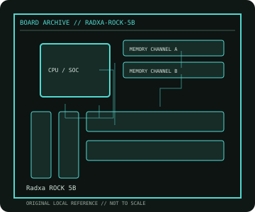

[ INDIVIDUAL COMPONENT // MOTHERBOARDS ]
Radxa ROCK 5B
Rockchip RK3588 SBC, 2022. This record documents the named model and its documented variants; confirm the PCB revision, submodel and firmware on the physical unit.

REVISION WARNING: Similar model names and PCB revisions may have different processors, connectors or firmware. Read the silkscreen and assembly code; use the support files for that exact board variant.
Specifications
| Catalog subcategory | Integrated and compact boards |
|---|---|
| Exact model / era | Radxa ROCK 5B — Rockchip RK3588 SBC, 2022 |
| CPU and socket / SoC | Rockchip RK3588: quad Cortex-A76 plus quad Cortex-A55 Arm cores, integrated Mali-G610 GPU and NPU |
| Chipset / platform | Rockchip RK3588 SoC |
| Memory | LPDDR4X board variants up to 16 GB, soldered and not DIMM-upgradeable |
| Slots and connectivity | M.2 M-key PCIe storage, microSD, eMMC socket, dual HDMI output, HDMI input, USB-C DP, USB 3/2, 2.5GbE, Wi-Fi/BT on selected configuration and 40-pin expansion header |
| Firmware | Radxa ROCK 5B bootloader, device-tree and OS images are specific to the board revision; consult the official wiki and supported OS matrix. |
Compatibility and revision notes
Check exact RAM SKU, M.2 key/interface, power source and case/cooler. ROCK 5B is distinct from ROCK 5A and ROCK 5 ITX; do not assume identical connector placement.
Socket, connector shape and family branding alone do not establish compatibility. Verify the exact processor list, minimum BIOS, memory population table, power input, dimensions, and shared-lane behavior in the cited manual before installation.
Preservation and repair
Inspect USB-C and M.2 standoff, maintain RK3588 heatsink contact, and record board revision and bootloader. Avoid powering through multiple inputs unless the documentation permits it.
For archival preservation, photograph the PCB, labels, connectors and included accessories before cleaning. Record serial/date codes, firmware versions, known faults, prior repairs and test conditions; use ESD-safe handling and do not power a board with loose conductive hardware beneath it.
Sources & further reading
- Radxa ROCK 5B — product/manual referenceModel-specific platform, board layout and interface reference.
- Radxa ROCK 5B — support and firmware resourcesSupport documentation; match the PCB revision, CPU support list and firmware release to the physical board.
Manufacturer/model documentation is the primary reference. Where vendor support is archived, match its revision notes to the board and do not cross-flash firmware from a similar product.